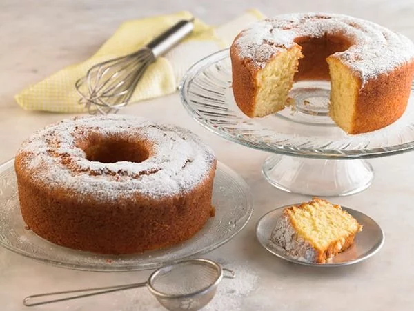

- INICIO
- PRODUCTOS
- NOSOTOS
Receta de bizcocuelo
A continuación, te contaremos en detalle los pasos a seguir para cocinar el mejor biscochuelo en casa. ¡No te lo pierdas!
Ingredientes para cocinar el bizcochuelo (6 personas)
- 3 huevos
- 1 taza de aceite neutro
- 50 ml de leche
- 1 taza de azucar
- 2 tazas de harina 0000
- 1 cucharita de polvo de hornear
- Rayadura de limón

Paso a paso:
- Batir el aceite neutro con el azucar en un bol hasta que tome una consistencia blanda
- Añadir los 3 huevos. Mezclar muy bien hasta asegurarse de que quede bien incorporado
- Agregar harina, leche y ralladura de limón/esencia de vainilla. Mezclar durante algunos minutos.
- Tomar un molde enmantecado y luego cubrirlo con un poco de harina. Esto es para que no se pegue
- Una vez que la mezcla quede homogénia, introducida en el molde
- Preder el horno a una temperatura de 180° grados y poner el molde durante en 45 minutos aprox.
- Retirar el molde y esperar a que se enfríe durante varios minutos
- Una vez que el molde se termine de enfriar, retirar el bizcochuelo con cuidado
- Espolvoriar con azucar glas la superficie del bizcochuelo
- ¡LISTO! Ya tenes un fabulozo biscochuelo